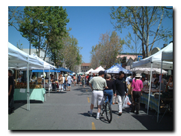
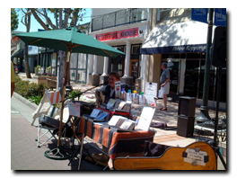
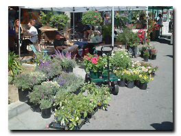
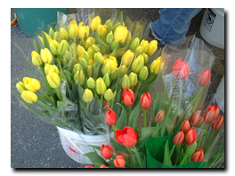

kkoisland.com
[前の日記]
[次の日記]
'*★
朝市(マーケット)
★*'
..*..*..
2004年10月1日(金) 晴れ
..*..*..
私の住んでいるサンフランシスコ・ベイエリアでは、土曜日か日曜日の朝、あちこちでマーケットが開かれます。近郊の市場の人たちが来て、出店が並びます。新鮮な野菜や果物、食べ物の他、バンドが歌ってたり、手作りアクセサリーなども売られています。




これって古くからある行事なのかと思っていたら、アメリカで始まったのは意外に最近のことなのだそうです。生活が便利で保存のきく食べ物が出回るにつれて、こういう自然のものが必要だという運動が始まり、そして、マーケットが開かれるようになったそう。
伝統のヨーロッパとは歴史も流れも違いますね。
写真は、この春に撮ったもの。サニーベールのダウンタウンです。チューリップがとてもきれいでした。
..*..*..*..*..*..*..*..*..*..*..*..*..*..*..*..*..*..*..*..*..*..